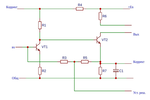
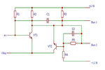
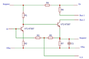
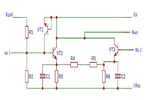
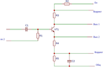
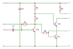

Эта схема представляет собой усилитель низкой частоты.
В схеме представлены семь резисторов, один конденсатор и два транзистора типа КТ307А.
Номинальное значение элементов приведены в таблице
см. вариант задания.
Требуется разработать конструкцию гибридной интегральной микросхемы усилителя низкой частоты УНЧ-61,
используя тонкоплёночную технологию. Рабочая температура окружающей среды от -10 до +35 °С.
Максимальная рабочая частота fmax соответствует верхней рабочей частоте используемого транзистора.

Данная схема является мультивибратором ждущим.
В этой схеме представлены пять резисторов, два конденсатора и два транзистора.
Номинальное значение элементов приведены в таблице
см. вариант задания.

Эта схема представляет собой усилитель низкой частоты (УНЧ).
В схеме представлены семь резисторов, один конденсатор и два транзистора типа КТ307А.
Номинальное значение элементов приведены в таблице
см. вариант задания.
Требуется разработать конструкцию гибридной интегральной микросхемы усилителя низкой частоты УНЧ-61, используя тонкоплёночную технологию.
Рабочая температура окружающей среды от -10 до +35 °С.
Максимальная рабочая частота fmax соответствует верхней рабочей частоте используемого транзистора.

Данная схема является дифференциальным усилителем.
В этой схеме представлены шесть резисторов, два конденсатора и три транзистора типа КТ369А.
Номинальное значение элементов приведены в таблице
см. вариант задания.

Данная схема является импульсным усилителем.
В этой схеме представлены пять резисторов, два конденсатора и один транзистор типа КТ369А.
Номинальное значение элементов приведены в таблице
см. вариант задания.

Схема электрическая принципиальная.
В этой схеме представлены пять резисторов, два конденсатора и два транзистора, в схеме могут быть транзисторы типа КТ307А..Т.
Требуется разработать конструкцию гибридной микросхемы, используя
тонкоплёночную технологию. Номинальное значение элементов приведены в таблице 1 (см. вариант задания).